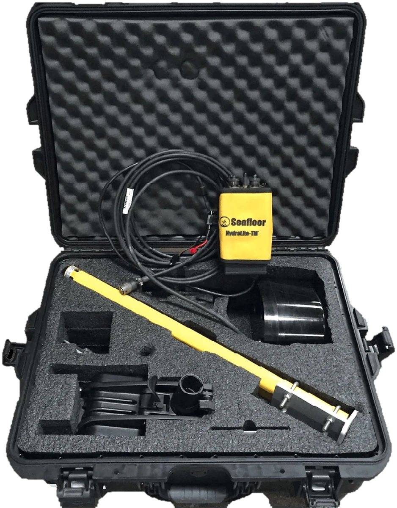

Survey vessels
EchoBoat-160: a compact unmanned survey vessel
Autonomous waypoint navigation, RTK GNSS integration and siltation volume auditing, without putting a crew on the water.
Learn more TrimbleGNSS · Total Stations · Scanning
TrimbleGNSS · Total Stations · Scanning DJI EnterpriseDrones · LiDAR · Dock
DJI EnterpriseDrones · LiDAR · Dock Esri ArcGISGIS & SDI
Esri ArcGISGIS & SDI Spectra GeospatialGNSS & Robotic Stations
Spectra GeospatialGNSS & Robotic Stations Nikon PrecisionOptical Survey
Nikon PrecisionOptical Survey US RadarGround Penetrating Radar
US RadarGround Penetrating Radar Seafloor SystemsHydrographic Survey
Seafloor SystemsHydrographic Survey IBM Tape StorageEnterprise Data Archive
IBM Tape StorageEnterprise Data Archive XGRIDSHandheld SLAM LiDAR
XGRIDSHandheld SLAM LiDAR

Autonomous waypoint navigation, RTK GNSS integration and siltation volume auditing, without putting a crew on the water.
Learn moreOfficial videos from Seafloor Systems.
Survey vessels and sensors, supplied and supported by KACO Systems.
Unmanned platforms for safe, repeatable bathymetry
Survey without a crew on the water
Hand-launchable and lightweight
Echosounders, sonar and data tools
Compact, low-power sensor
Set-up, calibration and survey walkthroughs from the Seafloor Systems team.
Learn moreMarine construction, hydrographic survey, hydrospatial and mining work.
Learn moreNews and technical articles from Seafloor Systems.
Learn more
USV deployment, echosounder calibration and data processing, with our trainers.
Learn moreReservoirs, rivers, and harbours are unforgiving places to work. We back every Seafloor Systems platform with certified support and hydrographic survey training.
Autonomous and remote operation keeps survey personnel on dry land while the USV collects bathymetric data across open water, currents, or hazardous reservoirs.
Repeatable bathymetric surveys track reservoir and dam siltation over time, supporting dredging planning and hydropower asset management.
Hands-on training in USV deployment, echosounder calibration, and hydrographic data processing for your own field and office staff.
Our application engineers help you match the right Seafloor Systems platform to your reservoir, river, or harbour survey requirements.